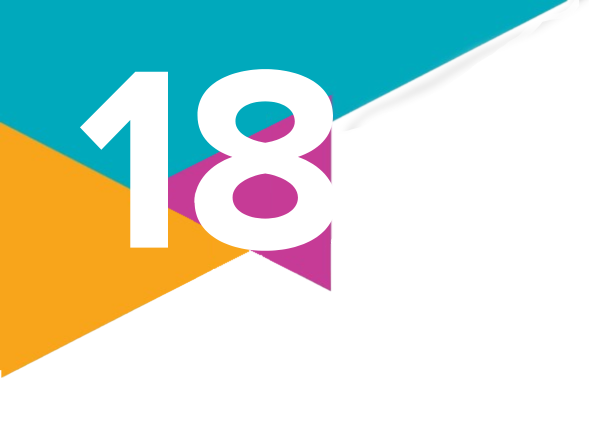
O número de pessoas mortas pela polícia em apenas oito estados brasileiros chegou a 4219 em 2022. Desse total, 2700
foram considerados negros (pretos ou pardos) pelas autoridades policiais, ou seja, 65,7% do total. Se considerados apenas
aqueles com cor/raça informada (3171), a proporção de negros chega a 87,4%.
Os dados são do estudo Pele Alvo: a Bala não Erra o Negro, realizado pela Rede de Observatórios da Segurança, do Centro
de Estudos de Segurança e Cidadania (Cesec), [...] com base em estatísticas fornecidas pelas polícias do Rio de Janeiro, de
São Paulo, da Bahia, de Pernambuco e do Ceará, Piauí, Maranhão e Pará [...].
Dos oito estados, apenas o Maranhão não informou a cor/raça de qualquer um dos mortos. Já nos estados do Ceará e Pará,
há um grande número de mortos sem identificação de cor/raça: 69,7% e 66,2% do total, respectivamente.
Os dados mostram que a polícia baiana foi a mais letal no ano passado, com 1465 mortos (1183 tinham cor/raça informada).
Desse total, 1121 eram negros, ou seja, 94,8% daqueles com cor/raça informada, bem acima da parcela de negros na população
total do estado (80,8%), segundo a pesquisa, feita com base em dados do Instituto Brasileiro de Geografia e Estatística (IBGE).
Aliás, isso ocorre em todos os sete estados que informaram a cor/raça de parte das vítimas. No Pará, por exemplo, 93,9% dos
mortos com cor e raça identificadas eram negros, enquanto o percentual de negros na população é de 80,5%, de acordo com o estudo.
Os demais estados apresentaram as seguintes proporções de mortes de negros entre aqueles com cor/raça informada e
percentuais de negros na população: Pernambuco (89,7% e 65,1%, respectivamente), Rio de Janeiro (87% e 54,4%), Piauí
(88,2% e 79,3%), Ceará (80,43% e 71,7%) e São Paulo (63,9% e 40,3%).
[...]
“Os negros são a grande parcela dos mortos pelos policiais. Quando se comparam essas cifras com o perfil da população,
vê-se que tem muito mais negros entre os mortos pela polícia do que existe na população. Esse fator é facilmente explicado
pelo racismo estrutural e pela anuência que a sociedade tem em relação à violência que é praticada contra o povo negro”, diz
o coordenador do Centro de Estudos de Segurança e Cidadania (CESeC), Pablo
ABDALA, V. A cada 100 mortos pela polícia em 2022, 65 eram negros, mostra estudo. Agência Brasil, Rio de Janeiro, 16 nov. 2023.
Disponível em: https://agenciabrasil.ebc.com.br/geral/noticia/2023-11/cada-100-mortos-pela-policia-em-2022-65-eram-negros
-mostra-estudo. Acesso em: 14 ago. 2024.
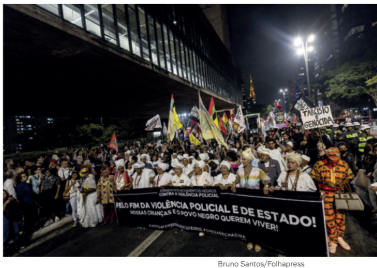
Neste capítulo, vamos refletir sobre um tema importante
que, por vezes, ainda é negligenciado em nossa sociedade: o
racismo praticado contra pessoas negras no Brasil.
Apesar das conquistas dos movimentos negros em nossa
jovem democracia, ainda é necessário estudar, refletir e
debater sobre discriminação racial. Vivenciamos as consequências
desse fenômeno social em escala mundial, manifestadas de
muitas formas. A construção de estereótipos discriminatórios
contra negros, indígenas, judeus, ciganos, latinos, mulçumanos,
palestinos, entre outros grupos, é um obstáculo para a
convivência pacífica diante da diversidade.
Manifestação de movimentos negros contra a
violência policial. São Paulo (SP), 2023.
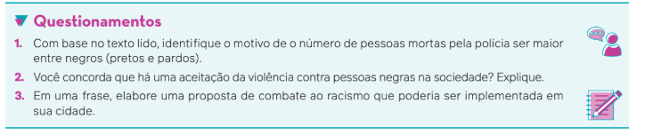
O que é racismo?
O racismo é um sistema excludente e de dominação que se baseia em diferenças físicas ou culturais percebidas.
entre grupos humanos. Ele é sustentado por ideias que desafiam a concepção ética da igualdade humana e que
não possuem comprovação científica, como se afirmava no passado.
Em relação às pesquisas científicas, podemos citar o Projeto Genoma Humano, que reuniu, em 1989, equipes de
diversos laboratórios que desenvolveram uma ampla investigação científica cujo principal objetivo era identificar o
sequenciamento completo do genoma dos seres humanos. Seus resultados, apresentados em 2003, comprovam
não haver, biologicamente, diferenças raciais entre os humanos. Nessa pesquisa, foi constatada que a diferença
genética de uma pessoa para outra é irrelevante para se afirmar que existem raças diferentes. Esse estudo também
constata que somos uma única espécie, portanto não se justifica qualquer argumento de superioridade ou inferioridade
entre seres humanos devido à cor da pele, ao formato do nariz, ao tipo de cabelo ou ao tipo físico.
Do ponto de vista ético, a afirmação de que todos temos uma igualdade humana fundamental, isto é, o fato
de sermos humanos nos garantir um valor igual de dignidade, é por si só contrária a qualquer concepção racista.
Dessa forma, não há parâmetro de distinção para que determinado grupo étnico, cultural, religioso ou afim
seja discriminado por suas características. Isso se aplica às noções discriminatórias que consideravam negros e indígenas
menos aptos para realização de determinadas tarefas, como raciocínios lógicos.
Atualmente, é do ponto de vista sociológico e histórico que essas diferenças são tratadas de forma desigual e
opressiva por aqueles que se consideram superiores. Por isso, em razão da persistência do fenômeno do racismo no
Brasil e no mundo, utilizamos o termo raça no sentido sociológico e histórico, e não baseado em aspectos genéticos.
Os conflitos inter-raciais estão presentes nas fundações do que conhecemos hoje como sociedade brasileira,
cuja história é marcada pelo racismo desde a chegada dos portugueses à nossa terra. Primeiro, foram os povos
indígenas exterminados pelo branco europeu; depois, o tráfico de africanos escravizados. Ambos representaram
dois dos maiores genocídios da história mundial. No tempo presente, o racismo se manifesta tanto de forma aberta
quanto sutil.
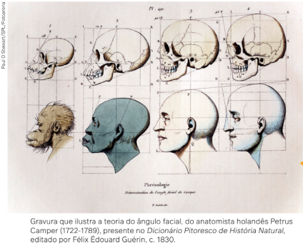
Teoricamente, o racismo é uma ideia ocidental (europeia) excludente, porque versa sobre a universalização de um conceito restrito de humanidade. Universalizar, nesse contexto, segundo o sociólogo Muniz Sodré (1942-), tem o sentido de reduzir as diferenças a um ideal humano europeu. Assim, é a universalização racional de determinado conceito de ser humano que cria o racismo no século XIX.
A classificação dos seres humanos em raças
por meio da morfologia craniana, que alguns
cientistas do século XIX também associavam
a capacidades intelectuais, é uma das
características do racismo científico.
A psicóloga e artista portuguesa de ascendência africana Grada Kilomba (1968-) identifica três característi-
cas do racismo: a diferença, a hierarquia e o poder histórico, econômico, político, social e cultural.
Na primeira característica, uma pessoa é vista como diferente por causa de sua origem “racial”. O negro só se
torna diferente porque difere do padrão dominante, que é branco. Para a autora, a branquitude – conceito de que
trataremos adiante – é a norma de comparação. Na segunda característica, essas diferenças estão
inseparavelmente ligadas às hierarquias. O diferente do branco é estigmatizado, desonrado e inferiorizado, e esses valores
são naturalizados. Por fim, a terceira característica demonstra que a construção da diferença e das hierarquias vem
acompanhada do poder histórico, econômico, político, social e cultural. As três características unidas configuram e
definem o racismo.
Na primeira característica, uma pessoa é vista como diferente por causa de sua origem “racial”. O negro só se
torna diferente porque difere do padrão dominante, que é branco. Para a autora, a branquitude – conceito de que
trataremos adiante – é a norma de comparação. Na segunda característica, essas diferenças estão inseparavel-
mente ligadas às hierarquias. O diferente do branco é estigmatizado, desonrado e inferiorizado, e esses valores
são naturalizados. Por fim, a terceira característica demonstra que a construção da diferença e das hierarquias vem
acompanhada do poder histórico, econômico, político, social e cultural. As três características unidas configuram e
definem o racismo.
Observando esse diálogo inicial com Muniz Sodré e Grada Kilomba, podemos entender a
ideia da psicanalista Neusa Santos Souza (1948-2008) sobre as origens da discriminação racial
no Brasil. Ela afirma que a sociedade brasileira escravista transformou o africano em escravo,
o nomeou como negro em uma raça específica, dando a ele um lugar, e ainda definiu uma
forma como ele deve ser tratado. Nesse sentido, o branco europeu estabeleceu uma maneira
de interação social que instituiu a ideia de que a cor negra significa ou representa o mesmo
que posição social inferior.
População negra e racismo no Brasil
A centralidade do debate sobre racismo no Brasil se justifica porque o país tem a maior população negra fora da África. Além disso, a maioria de nossa população se declara negra, e em diversas pesquisas sobre temas como saúde e doença, violência, qualidade de vida, escolaridade, renda, moradia, entre outros, a população negra apresenta os piores índices nas estatísticas publicadas.
Antes de observar os resultados dessas pesquisas estatísticas, é importante destacar que
o conceito de “negro” utilizado na Sociologia representa a junção de “preto” e “pardo”, termos utilizados nos censos
demográficos e nas pesquisas do Instituto Brasileiro de Geografia e Estatística (IBGE). E qual é a razão desse uso?
O IBGE tem como metodologia de pesquisa a autodeclaração das pessoas ao serem questionadas sobre sua classificação racial ou cor, considerando, desde o Censo de 1991, cinco categorias como opção: branco, preto, pardo, amarelo e indígena. Essa classificação é adotada até hoje em diversos estudos demográficos e sociológicos.
Desde o final dos anos 1990, alguns pesquisadores negros, ao investigarem os índices de escolaridade, renda e longevidade, perceberam que os piores indicadores se encontravam entre a população preta e parda. Esses números também demonstravam que, além de os brancos terem as maiores rendas, a maior escolarização e a maior longevidade, os índices de pretos e pardos apareciam próximos ou semelhantes. Tendo como base essas pesquisas, muitos autores começaram a agregar esses dados de pretos e pardos em somente uma categoria, a de negros.
Apesar de esse conceito ser amplamente aplicado nos estudos das Ciências Sociais, ele não é consensual. Recentemente, por exemplo, intelectuais indígenas têm contestado a classificação de pardo. Eles afirmam que os censos demográficos não identificam os indígenas que habitam o contexto urbano, pois muitas vezes esses se declaram como pardos para não sofrerem preconceito e racismo.
Esse movimento de contestação ainda requer mais pesquisas e um debate com o próprio IBGE para rever suas metodologias de apuração de classificação racial. Todavia, é importante ressaltar que os conceitos mudam ao longo do tempo. No Censo de 2022, por exemplo, a categoria pardo passou a ser entendida como alguém que se identifica como uma mistura de duas ou mais raças ou cores, incluindo as opções branca, negra e indígena.
Compreendido o contexto de disputa e mudanças desses conceitos, neste capítulo o foco recai sobre a abordagem das desigualdades existentes entre brancos, pardos e pretos. Por isso, agregamos estas duas últimas categorias em uma só: negros.
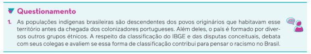
As estatísticas de cor/raça no Brasil
O conjunto de gráficos a seguir representa dados estatísticos que mostram as profundas
desigualdades baseadas na discriminação e no racismo contra pessoas negras. Esses dados
contribuem para desmistificar a ideia de que “não existe racismo no Brasil”.
O Censo de 2022 revela, pela primeira vez desde 1991, que o grupo de pessoas que se
declara parda predomina como maioria da população, com 45,3% (92 083 286 pessoas). Do
restante, brancos são 43,5% (88 252 121 pessoas); pretos, 10,2%, (20 656 458 pessoas); indígenas,
0,83% (1 694 863 pessoas); e amarelos, 0,4% (850 130 pessoas). Ao reunirmos pardos, pretos
e indígenas, a maioria dos brasileiros é negra e pertencente a povos indígenas, representando
56,3% (cerca de 113 967 386 do total de 203 080 756 pessoas da população brasileira em 2022).
Vejamos no gráfico a seguir o aumento do número de pessoas que se declaram pretas e
pardas, desde o censo de 1991.
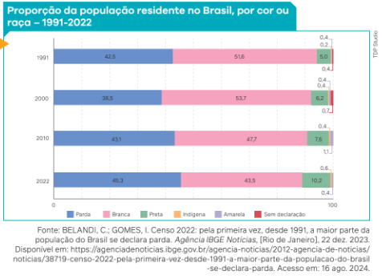
Observe no gráfico a tendência
de aumento do número de
brasileiros que se declaram
pretos, pardos e indígenas.
Como veremos adiante, isso
pode ser resultado das ações
dos movimentos sociais
negros, dos movimentos
indígenas e do crescimento
dos debates sobre as ações
afirmativas nas universidades.
Nota: Em 1991 e 2022, foram
considerados os resultados
da amostra. O percentual de
indígenas foi calculado pela
declaração de cor ou raça,
não representando o total
recenseado em 2010 e 2022, que
inclui o quesito “se considera
indígena” (totalizando 0,5% e
0,8%, respectivamente).
Observe o gráfico a seguir, que demonstra uma comparação dos rendimentos médios reais
dos trabalhadores de acordo com os quesitos sexo e cor ou raça.
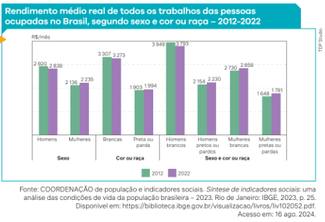
Observe que os grupos
que recebem os menores
rendimentos compreendem
a população preta ou parda,
sendo o menor rendimento
recebido por mulheres negras,
tanto em 2012 quanto em 2022.
Nota: Dados consolidados de
primeiras visitas em 2012 e
de quintas visitas em 2022,
sem resultados para amarelos,
indígenas e pessoas sem
declaração de cor ou raça.
A desigualdade demonstrada nessas pesquisas torna-se ainda mais evidente no gráfico
a seguir, que compara a participação de brancos e negros (pretos e pardos) no rendimento
domiciliar, partindo dos menores rendimentos até os maiores.
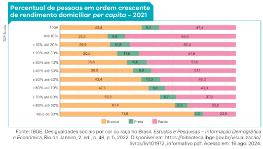
Nota: Valores
deflacionados
para reais médios
de 2021.
Como os dados revelam, mulheres e homens negros recebem os menores rendimentos, ao
passo que a população mais rica é composta, em sua maioria, por brancos. Portanto, no Brasil,
os marcadores sociais de raça estão diretamente relacionados aos marcadores de classe.
Quando verificamos as taxas de analfabetismo no Brasil, constata-se que havia 9,6 milhões de pessoas analfabetas com 15 anos ou mais em 2022, o que representa 5,6% do total da po- pulação. Ao analisar esse dado articulado ao quesito cor ou raça, o que chama atenção é, mais uma vez, as diferenças entre brancos e negros. Vejamos o gráfico a seguir.
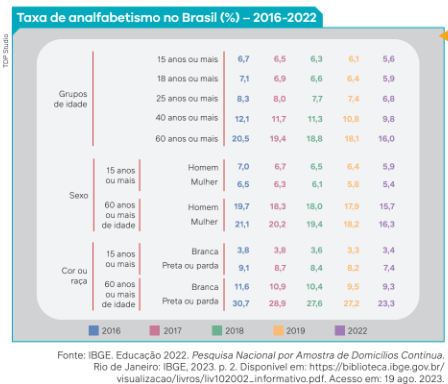
Em 2022, enquanto 3,4% das
pessoas brancas de 15 anos ou
mais eram analfabetas, o percentual
aumenta para 7,4% entre pessoas
negras. Os dados mostram que,
no grupo de pessoas de 60 anos
ou mais, a diferença é ainda maior:
brancos com 9,3% e negros com
23,3%. Portanto, observa-se uma
desigualdade racial relevante.
Nota: As diferenças entre 2016 e 2022
e entre 2019 e 2022 são significativas
ao nível de confiança de 95%.
Os níveis de desigualdade racial são ainda mais extremos ao analisarmos os índices de
violência no país. Observe o infográfico a seguir, baseado em dados reunidos pelo Fórum
Brasileiro de Segurança Pública (FBSP).
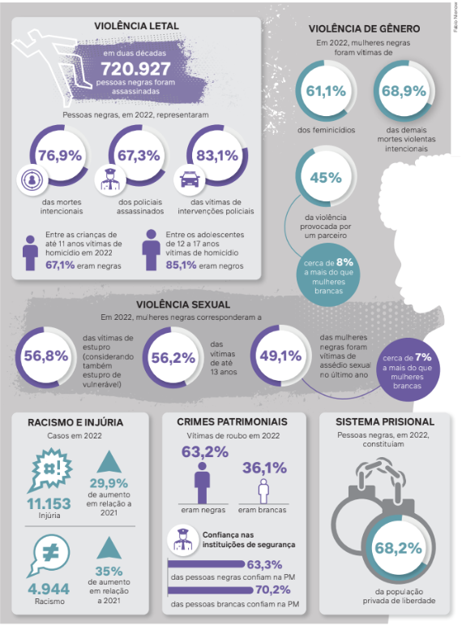
Fonte: FÓRUM BRASILEIRO DE SEGURANÇA PÚBLICA. A violência contra pessoas negras no Brasil 2023. São Paulo: FBSP, 2023.
Infográfico. Disponível em: https://publicacoes.forumseguranca.org.br/handle/123456789/232. Acesso em: 19 ago. 2024.
Observe que os índices de violência que atingem a população negra são muito altos. Nas
duas últimas décadas, cerca de 99 pessoas negras foram assassinadas por dia no Brasil. Em
2022, as pessoas negras representavam 76,9% das vítimas de assassinato intencional e 83,1%
das vítimas de intervenções policiais. Além disso, entre os policiais assassinados, 67,3% eram
negros.
Quando analisamos os dados de violência contra as mulheres, percebemos que 61,1%
das vítimas de feminicídio em 2022 eram negras. As mulheres negras também foram a maioria
das vítimas de assassinatos não motivados por questões de gênero, representando quase
70% das vítimas de morte violenta intencional. Todos esses dados chamam atenção para a
posição das mulheres negras no quadro geral de desigualdades.
Nesse sentido, para avaliar esses dados de maneira abrangente, é fundamental utilizar uma
ferramenta teórico-metodológica da Sociologia: o conceito de interseccionalidade.
Em 1989, no contexto do feminismo negro dos Estados Unidos, Kimberlé Crenshaw (1959-), advogada e professora universitária estadunidense, formulou o conceito de interseccionalidade com o objetivo de evidenciar a sobreposição de identidades sociais e culturais marcadas por discriminação, opressão e dominação. O conceito envolve a reflexão de que as opressões sobre as mulheres negras se sobrepõem, ou seja, elas não sofrem somente racismo mas também discriminação de gênero e de classe, ao mesmo tempo e de forma articulada. Os corpos de mulheres negras são os alvos preferenciais de diversos tipos de violência.
Crenshaw afirma que não é possível pensar na existência de apenas um único tipo de discriminação que ocorre contra uma mulher negra. É imprescindível analisar as violências contra mulheres negras considerando a desigualdade racial em interseção com dados a respeito das desigualdades de renda e de gênero. São como estruturas inseparáveis, um sistema de opressão que é interligado. Esse conceito foi amplamente mobilizado pelos movimentos feministas negros não só nos Estados Unidos mas também em outros países como o Brasil, onde se destaca a intelectual e ativista Lélia Gonzalez (1935-1994).
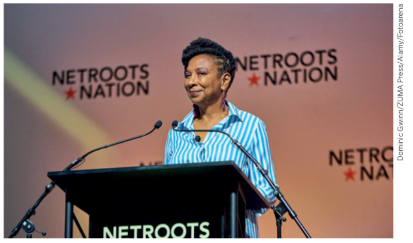
Outro ponto que chama a atenção nos dados apresentados são os percentuais de vítimas
de homicídios entre crianças e jovens. Do total de crianças de até 11 anos de idade assassinadas
no Brasil em 2022, 67,1% eram negras, e do total de vítimas adolescentes entre 12 e 17
anos, o percentual de negros é de 85,1%. Por que esse percentual é tão alto, se comparado às
vítimas de homicídio entre crianças e adolescentes brancos?
Kimberlé
Crenshaw
discursando em
evento. Baltimore,
Estados Unidos,
2024.
Ao final, o que todos esses números nos dizem? Será que no Brasil somos todos iguais em direitos e acesso às condições dignas de vida? Quem corre mais risco de morrer no Brasil? Quando observamos os dados, é possível reconhecer que determinadas pessoas são afetadas de forma desigual.
Tendo em vista esses dados, podemos refletir sobre a importância de movimentos que reivindiquem ao poder público mudanças e melhorias na qualidade de vida das pessoas negras.
Nas seções seguintes, serão apresentadas algumas histórias brasileiras fundamentais para a consolidação de pautas em prol da igualdade racial, que muitas vezes ainda recebem pouco protagonismo. Trata-se dos protestos e dos movimentos sociais negros.
Movimentos negros, ativismos e antirracismo
O papel social e histórico atribuído aos africanos escravizados no Brasil pelos colonizadores, a partir do século
XVI, não foi aceito de forma passiva. Na medida em que pessoas e povos foram desterritorializados e escravizados,
a resistência foi permanente na história brasileira.
Durante o período da escravidão, ocorriam fugas e revoltas, individuais ou coletivas. Quando essas revoltas
obtinham êxito, frequentemente resultavam na organização de quilombos, onde os escravizados fundavam um
novo território de liberdade diante do regime escravocrata. Foram vários os quilombos construídos e reprimidos
durante todo aquele período.
O Quilombo dos Palmares é a grande referência para os movimentos negros de luta e resistência contra a escravidão
colonial europeia no Brasil.
Comunidade de escravos fugidos formada na serra da Barriga, capitania de Pernambuco, entre o cabo
Santo Agostinho e o rio São Francisco, a partir do fim do século 16.
Por volta de 1630, Palmares, reunindo vários aldeamentos, já teria cerca de três mil aquilombados, desenvolvendo
uma agricultura avançada para os padrões locais e da época, plantando cana-de-açúcar, milho, feijão, mandioca,
batata e legumes; fabricando artefatos de palha, manteiga e vinho; criando galinhas e porcos;
e desenvolvendo uma organizada atividade metalúrgica, necessária à sua subsistência e defesa.
A chegada dos holandeses a Pernambuco, naquele mesmo ano, e as guerras que essa presença motivou
facilitaram a fuga de mais pessoas para Palmares. Em consequência, a comunidade foi se fortalecendo e se
transformando em uma ameaça real e perigosa ao poder colonial.
Em face dessa situação, a repressão tomou corpo. De 1596 a 1716, ano da destruição da resistência quilombola
na região, os palmarinos suportaram investidas de 66 expedições coloniais, tanto de portugueses como de
holandeses, e em 31 vezes tomaram a iniciativa do ataque. Durante sua longa existência, Palmares teve vários
chefes, sendo Ganga Zumba e Zumbi os mais importantes e conhecidos.
Em 1677, depois de sérias perdas suportadas pelos palmarinos, Ganga Zumba, então o principal dirigente,
negocia a paz com as autoridades coloniais e abandona a serra com seus seguidores, provocando uma séria
dissidência e o início da liderança de Zumbi. Em 1680, no arraial de Cucaú, próximo ao litoral, onde se estabelecera,
Ganga Zumba morre envenenado.
E a repressão a Palmares, cada vez mais cruenta, conta com a participação de milhares de soldados, de
milícias patrocinadas pelos senhores de terras e até mesmo de combatentes mercenários. Quinze anos mais
tarde, o líder Zumbi – após 17 anos de combate, em que se destacou como um dos maiores generais da história –,
atraiçoado por um de seus comandados, morre durante a expedição repressora de Domingos Jorge Velho. Após
Zumbi, caem seus sucessores Camuanga (desaparecido em 1699) e Mouza do Palmar (1716).
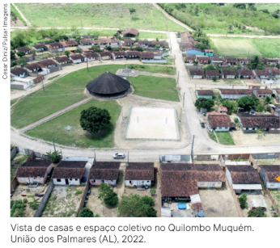
Mas em 1725 ainda há tropas militares na serra da Barriga, antecipando a ocupação oficial do território, que se
dá, afinal, em 1736. A experiência palmarina foi a maior e mais longa contestação à ordem escravista em todo mundo
e em todos os tempos. Por extensão – e mesmo por ter sido Palmares um reduto que abrigava negros, índios e brancos
pobres –, a saga de Zumbi constitui um rico episódio da luta contra o racismo. Por esse motivo, o dia de seu martírio,
20 de novembro, foi escolhido como “Dia Nacional da Consciência Negra”.
LOPES, N. Dicionário escolar afro-brasileiro. São Paulo:
Selo Negro, 2006. p. 128-129.
O Quilombo Muquém foi reconhecido em 2005 pela
Fundação Palmares como o único remanescente do maior
quilombo das Américas, o Quilombo dos Palmares.
A importância dos quilombos ecoa até os dias atuais por seu aspecto histórico e sua linguagem, como o uso da palavra aquilombamento, especialmente dentro dos movimentos negros.
No contexto brasileiro, com a herança da experiência dos quilombos, aquilombamento é um
movimento de resistência e luta pela liberdade em conjunto. Refere-se à criação de espaços de acolhimento
que sejam seguros para pessoas negras e grupos vulneráveis.
Entre tantas revoltas coletivas, destacamos aqui as mais organizadas durante a escravidão, que foram
duramente reprimidas: a Revolta dos Búzios, em 1798, na Bahia; a Revolta das Carrancas, em 1833, em Minas
Gerais; a Revolta dos Malês, em 1835, na Bahia; e a Balaiada, em 1838, no Maranhão. Essas revoltas também
lutavam pela abolição da escravidão.
As revoltas e fugas, entretanto, não eram a única realidade. Os africanos escravizados, especialmente os que
conquistavam suas alforrias, construíram espaços próprios, que sobreviviam entre a repressão e a negociação
com os colonizadores portugueses e senhores brancos brasileiros. Eram aqueles que formaram territórios sagrados
como os candomblés e as irmandades religiosas.
Quando estudamos as religiosidades no Brasil, vimos que o candomblé e a umbanda são criações brasileiras
e que não foram somente expressões culturais e religiosas. Os terreiros representavam também territórios não
institucionalizados pela lógica sociocultural dominante e pelo Estado. Eram espaços de resistência e de liberdade
de expressão, tendo como base matrizes ritualísticas africanas.
Já as irmandades religiosas foram confrarias de resistência mútua, sob o disfarce de atividades religiosas
cristãs. Essas ordens ou irmandades representavam a ampliação, além dos quilombos, de sua luta contra a
escravidão nas cidades nascentes do Brasil. Recentes estudos da História evidenciam que os africanos e seus
descendentes aproveitavam o espaço das irmandades para gerenciar recursos necessários à compra de cartas
de alforria.
Em meados do século XIX, fica cada vez mais forte a campanha abolicionista. Além disso, sob forte
pressão da Inglaterra, o governo do Império Brasileiro já não conseguia manter o regime escravocrata,
apesar do crescimento do tráfico clandestino na segunda metade do século, após a aprovação da lei
que determinou a sua extinção oficial – Lei Eusébio de Queirós, de 1850. Dada a continuidade do tráfico
negreiro de forma clandestina, ficou conhecida como “lei para inglês ver”.
Decorre, desde então, a intensificação das fugas de escravizados, compras de alforrias e uma aliança entre
alguns intelectuais brancos abolicionistas e intelectuais negros livres. Entre os intelectuais negros, destacam-se
as figuras de José do Patrocínio (1853-1905), Luís Gama (1830-1882) e tantos outros. Ao final, sob forte
pressão popular com a campanha abolicionista, o governo imperial é obrigado a decretar o fim da escravidão
em 1888.
O fim do período escravocrata, porém, não representou a instituição de uma cidadania para a população
negra recém-liberta. Revoltas posteriores também ocorreram, e as marcas e a cultura opressiva da escravidão
continuaram a existir, como observamos nas pesquisas do IBGE sobre o Brasil contemporâneo.
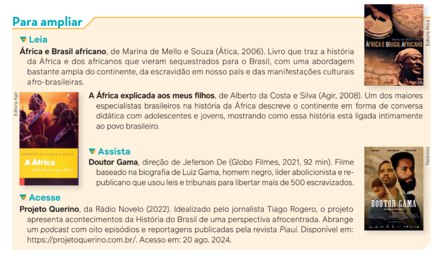
Imprensa negra e ativismos
No início do século XX, com a chamada Primeira República, pessoas negras não eram consideradas cidadãs plenas. Nesse sentido, suas lutas por integração na sociedade brasileira foram expressas de várias formas ao longo de todo o século.
Inicialmente, temos a constituição da chamada Imprensa Negra, com a publicação de jornais que circulavam na época, como O Alfinete (1918-1921), O Kosmos (1922-1924), O Clarim da Alvorada (1924-1927), A voz da raça (1933-1937), entre outros, todos na cidade de São Paulo. Esses jornais eram vinculados às associações autônomas das comunidades negras. Faziam críticas ao racismo e reclamavam da falta de autoestima dos negros, além de incentivarem a instrução escolar como uma forma de buscar a “emancipação completa” no pós-abolição.
O periódico A voz da raça, por exemplo, era publicado pela Frente Negra Brasileira (FNB), importante instituição fundada em 16 de setembro de 1931, na cidade de São Paulo. A FNB instalou-se também no Rio de Janeiro, em Pernambuco, na Bahia e no Rio Grande do Sul. Em 1936, transforma-se em partido político, mas, em 1937, com a ditadura do Estado Novo, instaurada por Getúlio Vargas (1882-1954), a FNB é fechada e seus membros presos e perseguidos.
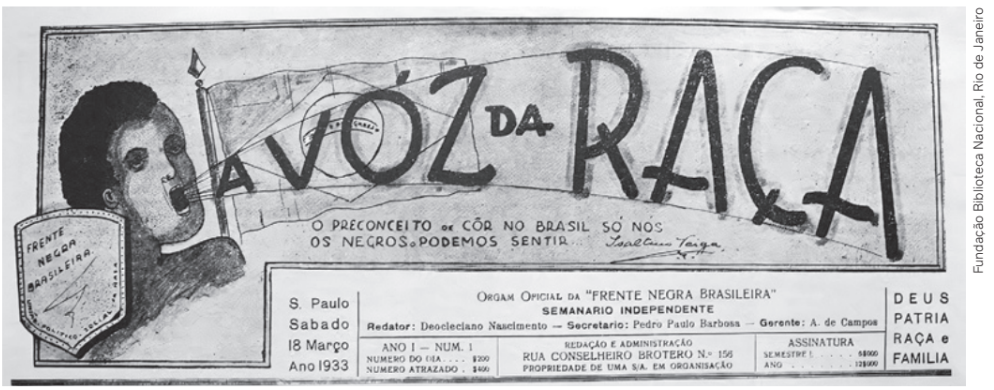
Cabeçalho do jornal
A voz da raça. São Paulo,
ano 1, n. 1, 18 mar. 1933.
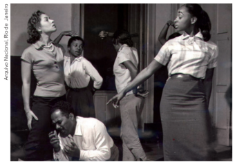
Outro importante movimento surge no cenário nacional em 1944: o Teatro Experimental do Negro (TEN). Fundado pelo artista e ativista político Abdias Nascimento (1914-2011), tinha como objetivo abrir os espaços das artes cênicas para atores e atrizes negros. Publicavam um jornal chamado Quilombo (1948-1950) e, entre suas lutas, exigiam que o racismo fosse considerado crime. O grupo também reivindicava políticas públicas de Estado voltadas especificamente para a população negra, inclusive sugerindo alterações no conteúdo dos currículos escolares.
Ensaio do Teatro
Experimental
do Negro,
com Abdias
Nascimento e
Léa Garcia
(1933-2023),
entre outras
atrizes. Rio de
Janeiro (RJ), 1957.
Junto a outros movimentos sociais em luta contra a Ditadura Civil-Militar, o Movimento Negro Unificado (MNU) foi construído ao longo da década de 1970. O marco inicial de sua fundação foi a manifestação pública ocorrida em São Paulo, em 7 de julho de 1978, como ato de protesto contra a violência policial desferida contra negros, representada pela morte por tortura do operário Robson Silveira da Luz (1957-1978). A partir desse episódio, foram criados núcleos em diversos estados.
O MNU inaugura uma forma de organização que prevalecerá em outros movimentos negros, com uma estrutura mais organizada, e se apresentará à sociedade brasileira como uma entidade voltada não somente a denunciar o racismo como também a propor políticas públicas. O MNU constituiu-se em um movimento nacional, ramificado em todas as regiões brasileiras.
Da década de 1980 em diante, várias organizações e movimentos foram criados, visibilizando cada vez mais as lutas e reivindicações da população negra contra o racismo. Além disso, foram propostos novos conceitos e abordagens sobre as relações raciais no Brasil, principalmente com base em influências e reflexões internacionais, como movimentos intelectuais, movimentos negros nos Estados Unidos e de libertação nacional na África.
O conceito de consciência negra se desenvolveu a partir dos anos 1960 contra a opressão colonial na África e pelo Protesto Negro nos Estados Unidos. Surge, então, uma ênfase nas lutas anticolonialistas de países africanos, com a organização do movimento internacional que ficou conhecido como pan-africanismo, em defesa de uma África livre e descolonizada. Esse movimento ecoou nas organizações negras nos Estados Unidos, onde apareceram a Nação do Islã, liderada por Malcolm X (1925-1965), e o Movimento pelos Direitos Civis, liderado por Martin Luther King Jr. (1929-1968). Também durante os anos 1960, surgiram os Panteras Negras, e a luta feminista ganhou força, sob a liderança da filósofa e ativista Angela Davis (1944-), filiada ao Partido Comunista dos Estados Unidos.
Pastor batista e ativista político
estadunidense, Luther King foi o
líder do movimento dos direitos civis
nos Estados Unidos nos anos 1960.
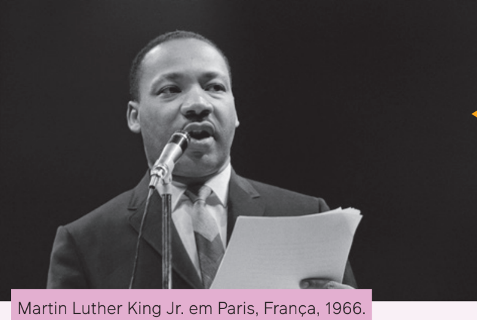
Além de ministro muçulmano, Malcom X foi ativista dos Direitos Humanos e dos direitos civis nos Estados Unidos nos anos 1960.
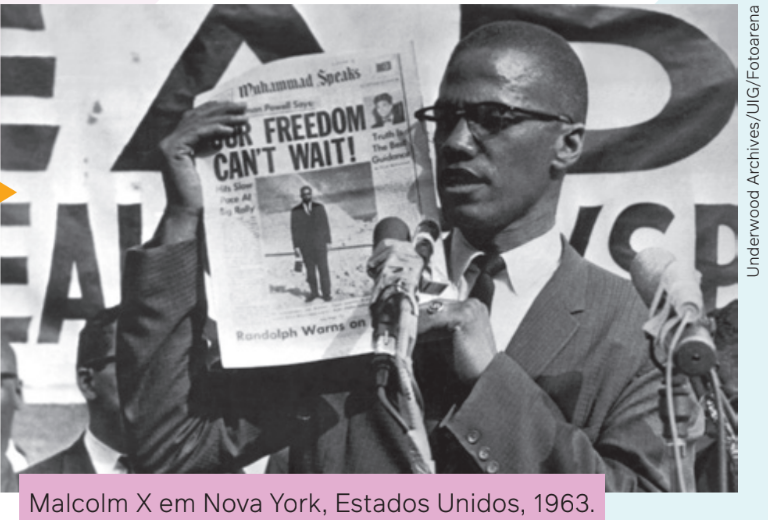
Nascido em Trinidade e Tobago e naturalizado
estadunidense, Carmichael (1941-1998), também
conhecido como Kwame Ture, foi um ativista do
Movimento dos Direitos Civis nas décadas de 1960
e 1970, sendo o criador do slogan de mobilização
“poder negro” (black power, em inglês).
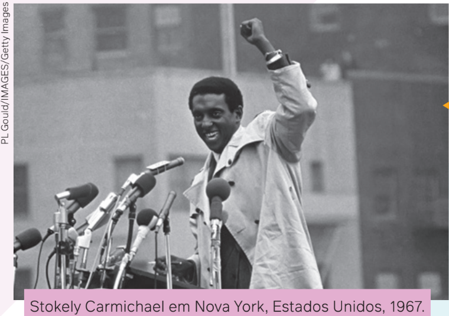
Professora e filósofa, Davis foi integrante do Partido Comunista dos Estados Unidos na década de 1970 e dos Panteras Negras.
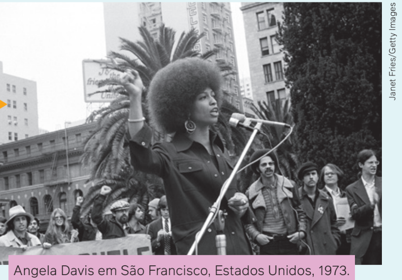
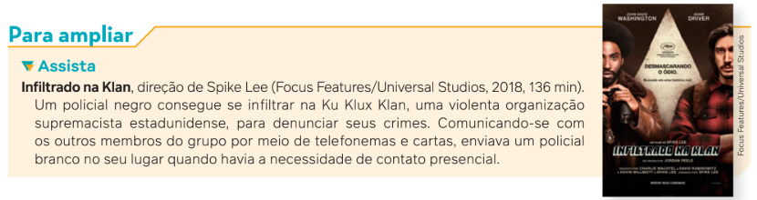
No mesmo período, vieram à tona na imprensa
mundial os violentos conflitos raciais existentes na
África do Sul desde o processo de colonização daquela
região com o regime do apartheid. Tratava-se
de um regime de segregação racial como parte da
legislação oficial do Estado. Nelson Mandela (1918-2013) e
Steve Biko (1946-1977), entre outros, transformaram-se em
símbolos mundiais da luta contra
o racismo.
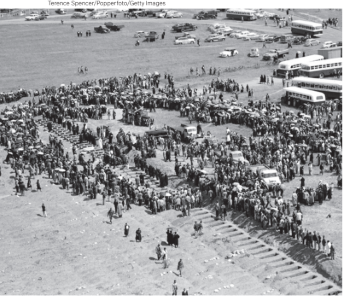
Entre os diversos conflitos ocorridos na luta da
população negra sul-africana contra o apartheid,
destacamos a manifestação que os movimentos
negros daquele país realizaram no bairro de Sharpeville,
na cidade de Joanesburgo, em 21 de março de 1960,
reunindo cerca de 20 mil pessoas. O ato público,
apesar de pacífico, foi massacrado pela repressão
policial, resultando na morte de 69 pessoas e deixando
186 feridas. Por essa razão, a data de 21 de março foi
transformada pela Organização das Nações Unidas
(ONU) no Dia Internacional de Luta pela Eliminação da
Discriminação Racial.
Funeral das vítimas
do Massacre de
Sharpeville, África
do Sul, 24 de
março de 1960.
Movimentos de autoafirmação negra
Com essas novas construções, o Movimento Negro Unificado, na década de 1980, no Brasil, transforma o 13 de maio no Dia Nacional de Luta e Denúncia Contra o Racismo e institui o 20 de novembro como o Dia Nacional da Consciência Negra, quando se comemora a resistência e a morte de Zumbi, um dos líderes do Quilombo dos Palmares.
A partir dos anos 1980, os movimentos negros passam a exigir visibilidade e formulam novas categorias de identificação. Com base na releitura de termos como “cor preta” ou “negro”, usualmente considerados como terminologia pejorativa, os movimentos conseguem ressignificar o termo “negro” como símbolo de uma condição étnica e racial. Até o termo “raça” é ressignificado, não se tratando mais de um termo biológico, e, sim, político. Ou seja, “raça negra” como um conjunto de indivíduos que têm histórias e culturas comuns no passado e no presente.
Com a força desses movimentos, a Constituição Federal de 1988 qualificou o crime de racismo como inafiançável e imprescritível por meio do seu artigo 5º, inciso XLII, posteriormente regulamentado pela Lei nº 7.716, de 1989. No mesmo ano da promulgação da Constituição, realizaram-se diversas manifestações denunciando a farsa da abolição da escravatura, em razão da passagem do centenário da Lei Áurea.
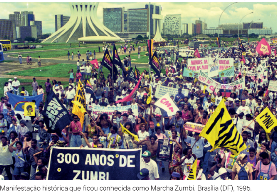
Foi a primeira vez na história brasileira que um chefe de Estado reconheceu a presença do racismo na sociedade – um fenômeno que o presidente, na condição de sociólogo, já havia indicado nas pesquisas que desenvolveu na década de 1950, como veremos adiante.
No final dos anos 1990, diversas entidades e organizações negras começaram a se preparar para participar da Conferência contra o Racismo, a Xenofobia, a Discriminação e a Intolerância, promovida pela ONU e realizada na cidade de Durban, na África do Sul, entre 31 de agosto e 8 de setembro de 2001. Essa conferência contou com a presença de cerca de 500 militantes, intelectuais e ativistas negros brasileiros. Desde o período preparatório, foram se consolidando debates e propostas que estão presentes até hoje na sociedade brasileira, como programas e propostas de políticas públicas específicas para a população negra relacionadas ao sistema de saúde, à educação, ao trabalho e ao meio ambiente; criação de secretarias especiais de promoção da igualdade racial nos estados e municípios; criação de um ministério da presidência da República para as questões raciais, entre outras demandas. Uma delas, em especial, que vamos abordar mais adiante, foi a adoção de políticas de ações afirmativas, conhecidas popularmente como políticas de cotas.
Em 1995, foi realizada a Marcha Zumbi dos Palmares contra o Racismo, pela Cidadania e a Vida, na qual cerca de 30 mil pessoas foram a Brasília, no dia 20 de novembro, para entregar um documento reivindicatório de políticas públicas de promoção da igualdade racial ao então presidente da República Fernando Henrique Cardoso (1931-).
Por força da pressão desses movimentos, o presidente declarou publicamente a existência de racismo no Brasil.
Por fim, há dois movimentos atuais que precisamos destacar: a Marcha das Mulheres Negras e a Campanha dos 21 dias de Ativismo contra o Racismo.
A Marcha das Mulheres Negras contra o Racismo, a Violência e pelo Bem Viver foi um momento de grande impacto na sociedade, ocorrida em 18 de novembro de 2015. Nessa marcha reuniram-se cerca de 50 mil mulheres para denunciar o racismo, o genocídio da população negra, o feminicídio, além de propor políticas públicas de combate ao racismo. A partir dessa iniciativa, em todos os anos ocorrem marchas em vários estados brasileiros.
A Campanha dos 21 dias de Ativismo contra o Racismo foi idealizada em 2016, no Rio de Janeiro, pela intelectual, militante negra feminista e psicóloga Luciene da Silva Lacerda (1959-). Tinha como objetivo construir atividades antirracistas coordenadas entre diversas universidades durante 21 dias seguidos no mês de março, encerrando-se sempre no dia 21, por ocasião do Dia Internacional de Luta pela Eliminação da Discriminação Racial.
A ideia de Luciene Lacerda se espalhou e não ficou restrita às universidades. Aderiram à campanha, imediatamente, diversos militantes e ativistas de comunidades periféricas, estudantes, professores, comunidades de terreiros e coletivos de jovens negros, ampliando-se, com o tempo, para outros estados brasileiros e entre militantes antirracistas em outros países, como a Inglaterra. A campanha, além de denunciar o racismo, propõe-se a debater e reivindicar o cumprimento das políticas de promoção da igualdade racial. A primeira edição começou em março de 2017 e segue ocorrendo anualmente.
Racismo e pensamento sociológico no Brasil
Podemos afirmar que os primeiros estudos sobre relações raciais no Brasil, divulgados
academicamente, remontam ao final do século XIX, entre alguns intelectuais como Nina Rodrigues
(1862-1906), Sílvio Romero (1851-1914), Oliveira Viana (1883-1951), entre outros.
O campo intelectual brasileiro da virada do século era dominado por teorias racistas
europeias, mas não se podia negar a evidência de que existia miscigenação do povo. Decorre,
portanto, entre vários autores, propostas para a solução do dito “problema racial brasileiro”:
o embranquecimento. Essa tese defendia que a miscigenação produziria uma população
mestiça sadia que se tornaria, a cada geração, mais branca.
Democracia racial brasileira?
Quando, em 1933, Gilberto Freyre (1900-1987) publica seu livro Casa-grande e senzala, ocorre uma virada radical na interpretação da sociedade brasileira. Freyre substitui o conceito de “raça” pelo de “cultura” na autoimagem do país.
A linha mestra de seu pensamento era de que o Brasil, de formação portuguesa, seria a primeira sociedade moderna constituída nos trópicos com qualidades sui generis. Freyre argumenta que, devido à miscigenação dos senhores escravocratas portugueses com escravizadas africanas e indígenas, teria sido atenuado o racismo explícito. Isso representava uma ideia nova, ou seja, de uma “escravidão amena”. Freyre afirmava que não havia dúvidas de que o escravizado no Brasil era bem tratado e menos miserável que os trabalhadores europeus do século XIX.
As interpretações de Freyre na Sociologia brasileira transformaram a miscigenação em algo positivo, criando, por sua vez, aquele sentimento de que vivemos em uma democracia racial, diferentemente da realidade de segregação racial existente nos Estados Unidos e do regime do apartheid da África do Sul.
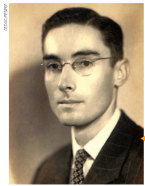
Após a Segunda Guerra Mundial, a Sociologia se mobilizou para os estudos de relações raciais, por conta da forma extrema da prática do racismo pelo nazismo e pelo fascismo. Nesse período, já nos anos 1950, as obras de Gilberto Freyre conquistaram notoriedade internacional ao retratar o Brasil sem problemas raciais. Assim, a Organização das Nações Unidas para a Educação, a Ciência e a Cultura (Unesco) resolve patrocinar um programa de investigação sobre a questão racial no Brasil.
Surgem, então, os estudos de Florestan Fernandes (1920-1995) na sua crítica ao “mito da democracia racial”; de Oracy Nogueira (1917-1996), com sua tese comparando os tipos de racismo existentes no Brasil e nos Estados Unidos, identificando que em nosso país existe um “preconceito de marca” baseado na cor da pele e não na origem étnica dos indivíduos; bem como foram desenvolvidas e publicadas diversas outras pesquisas sobre preconceito racial e racismo, como as de Octavio Ianni (1926-2004), Roger Bastide (1898-1974), Fernando Henrique Cardoso, entre outros.
O sociólogo Oracy Nogueira.
São Paulo (SP), 1945.
Florestan Fernandes foi o mais importante crítico das teses de Freyre nos anos 1950, preocupando-se em desenvolver pesquisas sobre a inserção do negro na sociedade brasileira pós-emancipação. Publicou, com o sociólogo francês Roger Bastide, em 1955, Brancos e negros em São Paulo. Em 1964, escreveu A integração dos negros na sociedade de classes, sua obra mais completa sobre a temática.
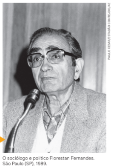
Florestan foi em busca de um entendimento acerca das marcas produzidas pela escravidão como causa da situação vivida pela população negra. Em sua análise, a escravidão não foi configurada como suave, como Freyre indicou em suas teses, e os espaços de convivência não foram amenos, mas pautaram-se na violência e no trabalho forçado, com os africanos escravizados sendo constituídos como mercadoria. Diante dessa condição, estes ficaram restritos à submissão ou às fugas como únicas possibilidades de resistência. Nesse sentido, Florestan questiona a existência de uma democracia racial brasileira como resultado desse processo histórico.
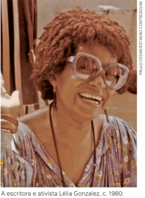
Saltando no tempo, podemos constatar diversas pesquisas acadêmicas que trouxeram interpretações sociológicas novas sobre o racismo e as relações raciais no Brasil, como a de Carlos Hasenbalg (1942-2014), no final dos anos 1970, que apurou estatisticamente as desigualdades raciais entre brancos e negros; das intelectuais Lélia Gonzalez (1935-1994) e Beatriz Nascimento (1942-1995), nos anos de 1980, que apresentaram questões e dados sobre a condição social das mulheres negras; de Joel Rufino dos Santos (1941-2015), também da mesma época, que analisou a invisibilidade dos negros na história brasileira.
Desses que citamos, destacamos os estudos do sociólogo argentino Carlos Hasenbalg. Suas pesquisas afirmavam que a discriminação racial no Brasil era resultado direto das desigualdades entre brancos e não brancos, sendo também sustentada pelas desigualdades de uma sociedade capitalista. Não se resume, portanto, a uma simples herança do período da escravidão.
A argumentação central de Carlos Hasenbalg era de que a exploração de classe e a opressão racial são mecanismos de exploração do povo negro, distanciando-o de bens materiais e simbólicos. Hasenbalg afirma que a população negra foi, ao longo do tempo, explorada economicamente pelas classes dominantes brancas. Para ele, a possibilidade de uma ascensão social dos indivíduos na sociedade brasileira está diretamente ligada à cor da pele e, nesse sentido, a “raça” constitui um critério seletivo no acesso à educação e ao trabalho, por exemplo. Com base em dados estatísticos da Pesquisa Nacional por Amostra de Domicílios (PNAD) de 1976, o autor mostra que, ao longo de um ciclo de vida econômica, pretos e pardos sofrem desvantagens geradas por atitudes discriminatórias.
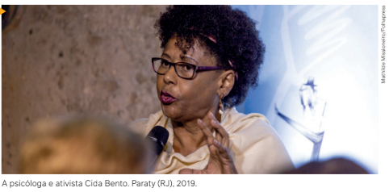
Em tempos mais recentes, o antropólogo Kabengele Munanga (1940-), a filósofa Sueli Carneiro (1950-), a psicóloga Maria Aparecida da Silva Bento (1952-), a pedagoga e antropóloga Nilma Lino Gomes (1961-), a filósofa Djamila Ribeiro (1980-) e tantos outros contribuem para enriquecer o debate.
Maria Aparecida
da Silva Bento,
conhecida como Cida
Bento, desenvolveu
o conceito de
branquitude aplicado
à sociedade brasileira.
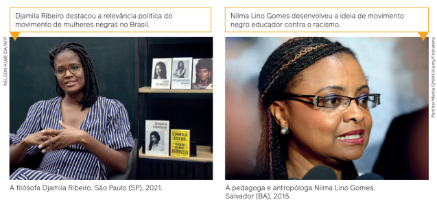
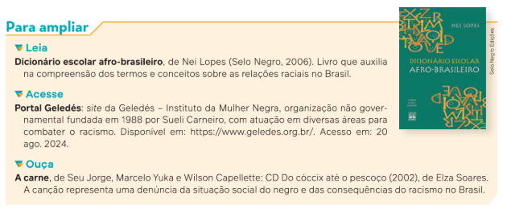
Racismo institucional e branquitude
Em virtude da estrutura discriminatória da nossa sociedade, algumas expressões ainda podem ser escutadas no cotidiano, como “na África só tem pobreza e miséria”, “dia 13 de maio é dia dos escravos”, “lista negra”, “preto de alma branca”, “samba do crioulo doido”, “ovelha negra da família”, entre outras.
Frases ou termos discriminatórios reforçam o racismo como um sistema generalizado presente na sociedade como um todo. O racismo pode ser identificado estruturalmente na discriminação que a população negra sofre no mercado de trabalho e no acesso a escola e moradia, por exemplo. Trata-se de situações de inferiorização cujos mecanismos não são identificados de uma forma totalmente explícita.
Foi nesse sentido que os militantes estadunidenses do movimento Panteras Negras Stokely Carmichael (Kwame Ture) e Charles V. Hamilton (1929-2023) conceberam, em 1967, o conceito de racismo institucional. Essa formulação aparece pela primeira vez na obra Black Power: a política de libertação nos Estados Unidos.
Segundo o conceito de racismo institucional, de Carmichael e Hamilton, o racismo se manifesta no funcionamento cotidiano da sociedade, como uma propriedade estrutural presente de forma rotineira, reproduzindo a dominação e a inferiorização da população negra.
As estruturas oficiais da sociedade funcionam de um jeito que privilegiam explicitamente sujeitos e modos de ser brancos, marginalizando os demais como grupos ou pessoas racializadas em desvantagens visíveis do lado de fora das estruturas dominantes. Assim, podemos dizer, conforme a definição de racismo institucional de Carmichael e Hamilton, que processos institucionais e comportamentos individuais são provenientes de uma sociedade em que o racismo não é exceção, mas, sim, a regra.
Outro conceito importante da Sociologia para entender mais o racismo, relacionado à formulação anterior, é a concepção de branquitude.
Joice Berth (1976-), escritora e psicanalista brasileira, frequentemente relata sobre sua experiência: “não me descobri negra, fui acusada de sê-la”. Já a filósofa Djamila Ribeiro compartilha:
O mundo apresentado na escola era o dos brancos, no qual as culturas europeias eram vistas como superiores, o ideal a ser seguido. Eu reparava que minhas colegas brancas não precisavam pensar o lugar social da branquitude, pois eram vistas como normais: a errada era eu.
RIBEIRO, D. Pequeno Manual Antirracista. São Paulo: Companhia das Letras, 2019. p. 24.
Cida Bento, psicóloga ativista do feminismo negro, também relata que, em cursos de formação que ministrava para debater desigualdades raciais, sempre surgia uma pergunta: O que significa ser uma pessoa negra ou branca no Brasil? Uma das respostas que ela ouviu foi que “ser branca significa ser uma pessoa como outra qualquer! Significa ser humano”. Ou seja, pela resposta, é fácil perceber que brancos não se pensam como brancos, como pessoas também racializadas, mas como um ser humano universal. Essa é a reflexão que se faz quando aparece o conceito de branquitude.
A psicóloga reitera que os brancos não realizam reuniões secretas na madrugada para definir como vão manter seus privilégios e excluir negros. Na verdade, a branquitude se manifesta como um conjunto de vantagens simbólicas, materiais, sociais e econômicas que pessoas brancas têm em uma sociedade racista. Com base nessa vantagem, que foi construída no período da colonização, em todos os lugares que os europeus povoaram, houve a constituição de uma identidade comum, na qual africanos, ameríndios, asiáticos, entre outros, foram designados como “o outro inferior”, enquanto o branco não se reconheceu como mais um “outro”, mas, sim, como o ser humano universal. Nesse sentido, podemos entender a branquitude como sinônimo de dominação e não somente como identidade.
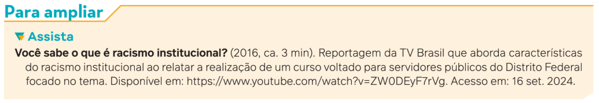
Peggy MacIntosh (1934-), feminista branca estadunidense, citada no livro de Cida Bento, fez uma lista de 46 privilégios brancos. Vejamos alguns.
1. Os brancos podem fazer compras sozinhos, sabendo que não serão seguidos ou assediados.
2. Conseguem proteger seus filhos de pessoas que podem não gostar deles.
3. A mulher branca pode falar em público para um grupo de homens poderosos sem ser julgada por sua raça.
4. Brancos podem ignorar a cultura de pessoas não brancas, que são a maioria do mundo, sem sentir culpa por tal ignorância.
5. Brancos podem escolher um curativo “cor da pele” e saber que ele vai parecer com seu tom de pele.
Enfim, branquitude é um conjunto de normas culturais que não são nomeadas, nem marcadas, nem presentes em qualquer lei. Há silêncio em torno dessas normas, pois elas não estabelecem necessidade de afirmação cotidiana, são naturalizadas. Pessoas brancas se posicionam na sociedade, portanto, por meio de privilégios raciais que não são entendidos dessa forma, não são verbalizados. Em outras palavras, a branquitude é um lugar social de privilégios, uma perspectiva pela qual pessoas brancas veem a si mesmas e a sociedade.
Como já estudamos, o racismo é um fenômeno histórico e sociológico, faz parte do processo de colonização e da colonialidade que foi operada pelos europeus para subjugar todos os outros que encontraram pelo mundo afora. Vamos conhecer outro conceito que também nos ajudará a compreender algumas estatísticas do racismo.
Necropolítica no dia a dia da sociedade
O termo necropolítica foi formulado em 2003 pelo filósofo e cientista político camaronês Achille Mbembe (1957-). “Necro”, de origem grega (nekros), significa “morto”. Já “política”, também do grego (politiká), refere-se a questões públicas ou governos e Estados ou, ainda, ao poder de governar ou administrar a coisa pública. A origem se relaciona à administração da pólis, a cidade-Estado grega da Antiguidade.
A ideia de necropolítica de Mbembe envolve o questionamento de Estados e governos terem “licença para matar”, sob a alegação da necessidade de “manter a ordem”. Para o autor, há discursos na história de muitos Estados e governos que justificaram e validaram massacres, extermínios e regimes totalitários modernos.
Mbembe afirma que necropolítica é o poder de determinar quem pode viver e quem deve morrer.
O autor quer demonstrar as variadas formas pelas quais existem no mundo estruturas de Estado que se baseiam na distinção entre pessoas e grupos que devem ter suas vidas protegidas e aqueles que podem dispensar esse cuidado. Quer dizer, há estruturas com o “poder de morte”, que definem as tecnologias para controlar populações e, ainda, com um discurso de que “deixar morrer” pode ser aceitável para uns, mas não para outros.
Nesse ponto, é importante destacar que, como Mbembe é um estudioso da escravidão, da descolonização da África e da negritude, ele associa a necropolítica a um racismo de Estado presente nas sociedades contemporâneas que praticam “políticas de morte”. Em outras palavras, pode-se dizer que a marca do “corpo matável” tem como parâmetro a raça.
Para Mbembe, o racismo é um fenômeno de controle, uma tecnologia de poder e dominação sobre os corpos de pessoas e grupos racializados. Ele se baseia nessa tese para entender o colonialismo, o sistema escravocrata e as violências cotidianas contra a população negra.
Diante da história de várias nações, Mbembe afirma que, em vez de administrar a coisa pública, os Estados usam seu poder e seu discurso para criar “zonas de morte”. Os exemplos que ele cita como zonas de morte são a Palestina, onde temos o caso extremo envolvendo o conflito na Faixa de Gaza; os conflitos presentes em alguns países africanos; e a região do Kosovo, nos Bálcãs. Nesses locais, a morte se torna a última ação de dominação.
Desse modo, o que Mbembe nos diz é que aqueles que morrem em zonas de morte são pessoas escolhidas com base no racismo, e elas são declaradas inimigas da ordem, mesmo que de forma fictícia. Com isso, pode-se matá-las sob a justificativa de interromper um ciclo de “mais violência”. Essas mortes, assim, estabelecem, contraditoriamente, uma espécie de “segurança geral”.
Pensemos agora no contexto do Brasil, por meio dos dados do Fórum Brasileiro de Segurança Pública que vimos anteriormente. Segundo o 17o Anuário Brasileiro de Segurança Pública, 67,1% das crianças de até 11 anos vítimas de homicídio em 2022 eram negras; já entre os adolescentes de 12 a 17 anos, o percentual de negros vítimas de homicídio subia para 85,1%. Ao relacionar outras variáveis, como classe, evidencia-se ainda mais como jovens negros pobres e periféricos são as principais vítimas de violência letal e intencional.
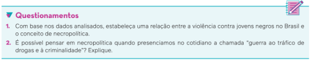
“Vidas negras importam” e as políticas de ações afirmativas
No auge da pandemia de covid-19, em 28 de maio de 2020, em Minneapolis, Estados Unidos, o segurança negro George Floyd foi assassinado por um policial branco que o estrangulou ao se ajoelhar em seu pescoço para imobilizá-lo durante uma abordagem policial. A cena foi filmada e divulgada para o mundo todo.
Esse crime desencadeou centenas de protestos antirracistas nos Estados Unidos, na Europa e no Brasil. Espalhou-se pelo mundo a frase “black lives matter”: em português, “vidas negras importam”.
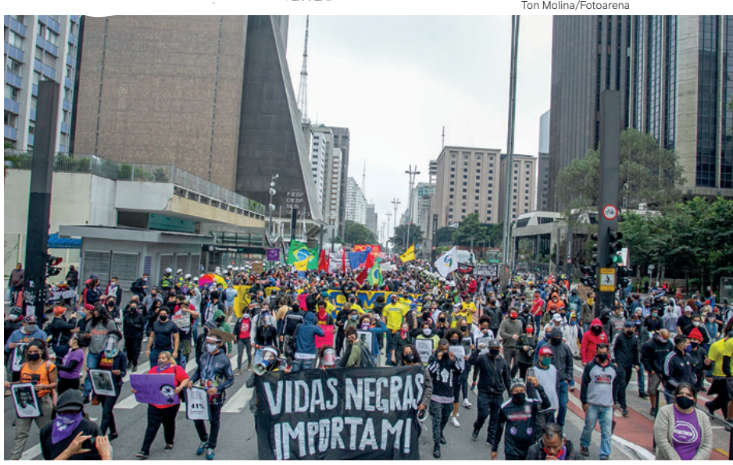
O antirracismo foi o carro-chefe das mobilizações nas ruas estadunidenses, agregando brancos, latinos e negros. No Brasil, também aconteceram diversas manifestações antirracistas, com os movimentos negros acrescentando ao lema a afirmação “não basta dizer que não somos racistas, é preciso ser antirracista”.
Manifestação antirracista, com destaque
para o movimento "Vidas negras
importam". São Paulo (SP), 2020.
Nessa onda antirracista, ainda nos anos 2000, os movimentos negros conquistaram uma reivindicação que causou muito impacto na sociedade brasileira: trata-se das políticas de cotas para negros e negras em diversos concursos públicos e para o acesso às universidades por meio do Exame Nacional do Ensino Médio (Enem) e de alguns vestibulares.
A política de cotas é uma proposta dos movimentos negros, desde os anos 1990, contida nas propostas mais gerais sobre políticas de promoção da igualdade racial, denominadas políticas de ações afirmativas.
As ações afirmativas se referem a diversas políticas públicas e privadas cujo objetivo é promover benefícios, recursos, oportunidades e direitos civis, políticos e culturais a vários segmentos sociais que são, ou foram, objeto de discriminação na sociedade.
A Índia foi pioneira na adoção dessas políticas, na Constituição de 1950, quando se institucionalizou a chamada “política de reserva” em assentos legislativos e cargos públicos.
Entretanto, a primeira vez que essas políticas foram pensadas para contextos de discriminações raciais foi nos Estados Unidos. Nos anos 1960, a expressão “ação afirmativa” ganha o sentido de “discriminação positiva”. Vejamos com mais detalhes, nas palavras de alguns cientistas sociais e políticos, qual é o significado dessa afirmação.
[...] parece-nos razoável considerar ação afirmativa todo programa, público ou privado, que tem por objetivo conferir recursos ou direitos especiais para membros de um grupo social desfavorecido, com vistas a um bem coletivo. Etnia, raça, classe, ocupação, gênero, religião e castas são as categorias mais comuns em tais políticas. Os recursos e oportunidades distribuídos pela ação afirmativa incluem participação política, acesso à educação, admissão em instituições de ensino superior, serviços de saúde, emprego, oportunidades de negócios, bens materiais, redes de proteção social e reconhecimento cultural e histórico.
FERES JÚNIOR, J. et al. Ação afirmativa: conceito, história e debates. Rio de Janeiro: EdUERJ, 2018. p. 13.
Quando aplicada no acesso à educação ou a empregos, as ações afirmativas são denominadas “reservas de vagas” (ou cotas).
No Brasil, a primeira proposição de ações afirmativas foi apresentada pelo então deputado federal Abdias Nascimento, com seu Projeto de Lei no 1.332, de 1983, mas não foi aprovado pelo Congresso Nacional.
Apesar dos intensos debates e das pesquisas realizadas nos anos posteriores, somente em 2002, no estado do Rio de Janeiro, foram instituídas as ações afirmativas na modalidade de cotas, nas universidades públicas estaduais. Essa medida foi alvo de diversas ações na justiça por aqueles que se sentiram prejudicados pela reserva de vagas. Entretanto, em 2012, o Supremo Tribunal Federal (STF) considerou constitucional a criação de política de reserva de vagas pelas universidades brasileiras. Por muitos anos, foram debatidos variados projetos de lei para instituir as políticas de cotas, até que, em 29 de agosto de 2012, foi promulgada a Lei Federal no 12.711, batizada de Lei de Cotas.
A política de cotas de acesso às universidades se estabelece com um certo percentual de vagas exclusivas.
Pelo menos 50% das vagas devem ser destinadas a estudantes provenientes de escolas públicas.
Dessas vagas, 50% devem ser reservadas para pessoas de baixa renda.
Depois desses dois critérios, as vagas da reserva devem ser destinadas a pessoas autodeclaradas pretas, pardas, indígenas e quilombolas e pessoas com deficiência, na mesma proporção desses grupos entre a população do estado em que a universidade se encontra.
Essas são as regras gerais, e cada instituição de ensino tem suas particularidades. A reserva de vagas para ingressar nas universidades não significa que a pontuação para aprovação nesses concursos (obtida nas provas do Enem ou de vestibulares específicos) seja rebaixada. Os critérios são os mesmos para aqueles que não optam por disputar as vagas das cotas. Ou seja, se não tiver uma pontuação exigida pelos exames, não é aprovado. A diferença é que se cria uma oportunidade a mais para determinados grupos mais vulneráveis, como aqueles que se declaram pretos ou pardos.
A Lei de Cotas prevê que, a cada 10 anos, haja uma revisão desse programa, com base em pesquisas que avaliem a política. A primeira revisão ocorreu em 2023. Uma das mudanças mais significativas para os movimentos negros e por igualdade racial foi a inclusão de estudantes quilombolas na reserva de vagas, grupo que não era beneficiado pela política original.
Cerimônia de
sanção presidencial
da revisão da Lei de
Cotas. Brasília (DF),
2023.